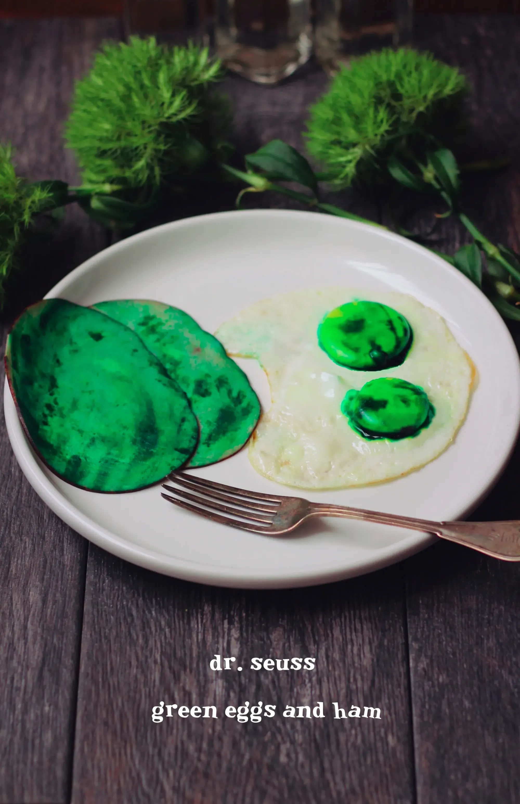

Dr Seuss Green Eggs and Ham

Description
Simple dish from famous childs tale.
Ingredients:
- 2 large eggs
- 2 slices ham
- green food coloring
- salt to taste
- avocado oil
Steps:
- Take two eggs and separate the yolks from the whites. Gently cradle one yolk in your hand and add one small drop of green food coloring. Gently spread the color with your fingers until the yolk is colored. Repeat this with the other yolk. Dab off any excess with a towel or it will leak into the whites.
- Heat a pan on medium low heat and add 1 tbsp of canola oil. I find this process is easier when cooked on low heat. Add the whites. When the whites begin to firm gently lay the yolks on top. Cover with a lid and allow to cook through to what you prefer.
- This part is optional but in Green Eggs and Ham, the ham was green. I simply dapped a bit of green food coloring on the ham but I know some prefer their ham without the color.